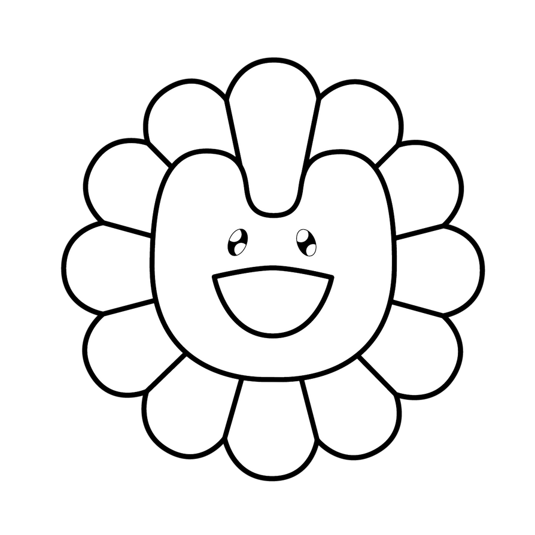

$ dig +short git.njzlabs.com
git.njzlabs.com
Reverse Proxy & TLS — 200 OK
nginx proxy manager · let's encrypt
$

$ dig +short git.njzlabs.com
Reverse Proxy & TLS — 200 OK
nginx proxy manager · let's encrypt
$
$ dig +short dash.njzlabs.com
Dashboard & Uptime — 200 OK
glance · monitor · server-stats
$
$ dig +short portainer.njzlabs.com
Container Control — 200 OK
portainer · docker compose
$
$ dig +short igrow.njzlabs.com
Knowledge Agent — 200 OK
hermes · telegram · markdown
$
$ dig +short logs.njzlabs.com
Logs & Vault Sync — NXDOMAIN
dozzle · couchdb livesync
$